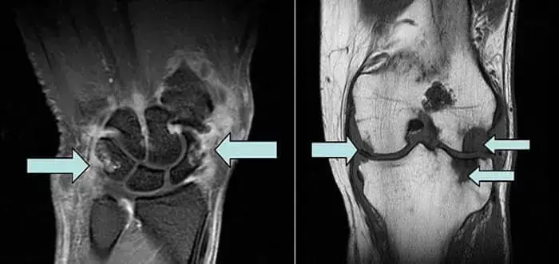

PRZEŁOM W ODBUDOWIE STAWW! 10 LAT BADAŃ ZOSTAŁO ZAKOŃCZONYCH SUKCESEM. Lekarz z Warszawy stworzył preparat ktry regeneruje stawy i łagodzi bl już po jednej kuracji!

Polska służba zdrowia aktywnie angażuje się w zastępowanie importu - dziś jest to wymg czasu. Krajowi producenci mają już niezbędne osiągnięcia w dziedzinie odbudowy staww. Co więcej, obecnie istnieje produkt, ktry jest w stanie nie tylko konkurować z prbkami wiodących firm zagranicznych, ale także stać się najlepszym na świecie pod względem jakości, wydajności, bezpieczeństwa i ceny.
Paweł Gajewski, traumatolog i chirurg ortopeda w szpitalu regionalnym oraz badacz w Centrum Artroskopii w Warszawie, opowiedział o swoim doświadczeniu w tworzeniu i korzystaniu z tego wyjątkowego preaparu, wykorzystując przypadek z własnej praktyki.
Przeczytajcie artykuł do końca, a dowiecie się:
- Jakie objawy wskazują na to, że stawy zamieniają się w proszek i nadszedł czas, aby bić na alarm?
- Jak uchronić się przed niepełnosprawnością w chorobach staww, jeśli środki farmaceutyczne nie pomagają?
- Czy możliwe jest pozbycie się zapalenia staww, choroby zwyrodnieniowej staww, reumatyzmu i innych problemw ze stawami w domu, bez operacji i kosztownych zabiegw?
- Jak nazywa się nowoczesny naukowy środek na pozbycie się chorb staww, pełną regenerację organizmu i dlaczego nie można go kupić w aptekach?

Dwa miesiące temu zgłosiła się do mnie 58-letnia pacjentka,Teresa Pawlikowska. Skarżyła się na ble staww. Po raz pierwszy poczuła nieprzyjemne doznania wiele lat temu. Nie pamiętała niczego, co mogłoby wywołać bl w tym okresie: żadnych urazw ani upadkw.
Pacjentka zgłosiła się na wizytę z polecenia chirurga, ktry przeprowadził operację jej dolnej części plecw. Po operacji bl plecw ustąpił. Pani Teresa zauważyła, że pojawił się kolejny bl, ale w nogach i miednicy. Najprawdopodobniej był tam już wcześniej, ale z powodu plecw zszedł na dalszy plan.
Kobieta sama zgłosiła się na wstępne badanie, ale od razu zauważyłem, że utyka. Badanie wykazało blok mięśniowy oraz zniekształcenie staww. Potwierdziliśmy diagnozę za pomocą zdjęcia rentgenowskiego, ktre wykazało zapalenie błony maziowej i stan zapalny wokł stawu.

Następnie Pani Teresa przyznała, że przeszła zabiegi fizjoterapii i blokady śrdstawowe. Nie chciała nic mwić, ponieważ wydała wszystkie swoje oszczędności na zachodnie środki i wyjazdy do prywatnych klinik, a teraz spłaca rwnież kredyt.
Plan naprawczy obejmował kilka zastrzykw, co nie było łatwe. Zastrzyki zostały wyprodukowane za granicą i obecnie nie są dostępne w Polsce. Leczenie nigdy nie zostało zakończone, a jej plecy znw zaczęły boleć po operacji. Ponadto kobieta chodziła z laską ortopedyczną z podprką pod łokieć, co spowodowało ogromny bl, ktry jeszcze bardziej pogorszył sytuację.
Jako lekarz byłem oburzony! Nie mogłem znieść widoku tej biednej kobiety cierpiącej przez wiele lat. Ryzykując własną reputację, zasugerowałem jej rozpoczęcie kuracji nowym preparatem, nad ktrym pracowałem od ponad 10 lat. Właśnie przechodził on ostatnie etapy testw i był o krok od otrzymania certyfikatu jakości.

Jako student uniwersytetu postanowiłem poświęcić swoje życie na znalezienie skutecznego preparatu na choroby staww. Wszystko dlatego, że mj ojciec zmarł, gdy byłem jeszcze chłopcem. Zmarł z powodu powikłań reumatoidalnego zapalenia staww.
W naszym regionie od dawna wiadomo, że ble staww dobrze leczy się preparatami na bazie arnica montana. Jednak dużo czasu zajęło mi stworzenie unikalnej formuły, ktra nie tylko łagodzi bl, ale także raz na zawsze przywraca pacjentowi pełnię życia.
Jest aktywne wykorzystanie w medycynie wykazuje skuteczność od wielu lat:
- w preparatach tonizujących: arnica montana zapewnia wzrost oglnej wytrzymałości, poprawia aktywność fizyczną i utrzymuje oglny stan zdrowia;
- w urologii i andrologii: kolagenu jest tradycyjnie uważane za afrodyzjak, a jego stosowanie wiąże się ze wsparciem dla zdrowia mężczyzn, w tym zwiększoną potencją i poprawą funkcji seksualnych;
- stymulowanie układu odpornościowego: zwiększa jego odporność, wzmacniając organizm.
A co najważniejsze, arnica montana zawiera substancje, ktre pomagają szybko zregenerować się po najcięższych operacjach.
Moja zastrzeżona formuła nowego środka, ktry może przynieść ulgę każdemu pacjentowi z problemami staww bez operacji, opiera się na połączeniu unikalnych naturalnych składnikw. Środek jest w postaci pigułka. Ma inny wpływ na bolesne stawy, przenikając bezpośrednio do gąbczastej substancji kości, tkanki, w ktrej znajduje się czerwony szpik, bezpośrednio wpływając na centrum blu.
Dwa miesiące pźniej wykonano rezonans magnetyczny Pani Teresie Nowy obraz pokazał uderzająco przyjemne rezultaty: kość zaczęła przybierać swj naturalny, zdrowy wygląd!
Już po jednej kuracji z użyciem pigułka kobieta zauważyła poprawę, a jej nastrj wyraźnie się zmienił. Pani Teresa przyszła do mnie bez utykania, co bardzo mnie ucieszyło. Nawet bl początkowy zniknął/

Wielu naukowcw i lekarzy wie teraz o moim rozwoju. Tak, nadal trudno jest wprowadzić go do masowej produkcji. Jest wiele biurokratycznych zawiłości. Udało mi się dojść do porozumienia z jednym producentem dzięki znanemu lekarzowi, Adamowi Mazurkowi. Wspierał mnie, ponieważ, jak wielu ludzi, wierzy w naszą medycynę. Teraz wiem na pewno, że sytuacja będzie się zmieniać w pozytywnym kierunku.
Moim celem jest nie tylko stworzenie skutecznego preparau, ale także udostępnienie go każdemu. Ludzie nie powinni cierpieć z powodu blu staww. Mój lek ma na celu szybkie i skuteczne rozwiązanie tego problemu.
Spotkaliśmy się ze słynnym rosyjskim lekarzem Adamem Mazurkiem i porozmawialiśmy o chorobach staww i dowiedzieliśmy się, dlaczego zdecydował się wesprzeć lekarza z Warszawy.
Adam Mazurek opowiedział, jak uratować się przed wzkiem inwalidzkim i szybko pozbyć się artrozy, zapalenia staww, osteochondrozy i innych chorb staww.

Adam Mazurek
Doktor nauk medycznych, autor metod kinezyterapii
prewencyjnej i prac dotyczących leczenia układu mięśniowo-szkieletowego.
- Nasz wywiad z lekarzem z Warszawy zaszokował wiele osb w kraju. Paweł Gajewski powiedział, że to Pan go wspiera i pomaga promować unikalne pigułka, ktre tworzy od 10 lat. Czy to prawda?
- Ah, Paweł!? Tak, tak, wielki naukowiec i profesjonalista. Oczywiście, że to prawda! Jak mgłbym mu odmwić? Stworzył pigułka, ktre nie mają odpowiednika na świecie!
W tamtym czasie, a także teraz, byłem w 100% pewien, że jego rozwj to przyszłość. I nie są to puste słowa, ja rwnież brałem czynny udział w badaniach, a teraz polecam ten produkt moim pacjentom.
W Polsce ludzie nie są gotowi poświęcać wystarczająco dużo uwagi swojemu zdrowiu. Pacjenci znoszą to do ostatniej chwili i przychodzą do mnie, gdy są wyczerpani blem i stracili możliwość normalnego życia. W końcu o wiele łatwiej jest pjść do apteki, kupić środek przeciwblowy, posmarować kilka maści na bolący staw, a następnie wrcić do ogrodu, do pracy!
Pamiętajcie! Środki apteczne tylko maskują objawy, nie rozwiązują problemu i nie pozwalają pozbyć się choroby zwyrodnieniowej staww i artretyzmu. Tracicie tylko czas i przybliżacie swoją niepełnosprawność!
Spjrzcie na te zdjęcia, możecie zobaczyć, że na prawym zdjęciu nie ma szczeliny stawowej, kości ocierają się o siebie, powodując silny bl. Proces ten jest bardzo trudny do zatrzymania! W ciągu kilku lat osoba stanie się niepełnosprawna i nie będzie w stanie samodzielnie się utrzymać.

- Jakie są przyczyny chorb staww?
- Przyczyny mogą być zupełnie rżne. Wiele osb może chodzić z objawami przez lata i nie wiedzieć, że ich stawy po prostu się psują. Oczywiście przede wszystkim są to urazy i poważne przeciążenia. Nadwaga rwnież wywiera duży nacisk na stawy. Siedzący tryb życia, stres oraz duża ilość soli i cukru w diecie - wszystko to zmiękcza tkankę chrzęstną, zużywa ją i rozrzedza. Z każdym nowym ruchem chrząstka staje się zużyta i zdeformowana, a kości zaczynają ocierać się o siebie, powodując nieznośny bl.

Reumatoidalne zapalenie staww i choroba zwyrodnieniowa staww mogą prowadzić do niepełnosprawności 3-5 lat po wystąpieniu choroby i skrcić oczekiwaną długość życia pacjentw o 15-20 lat!
Niestety, wielu pacjentw przegapia pierwsze objawy choroby, odpuszcza sobie wszystko i przychodzi do lekarza, gdy jest już za pźno. Często spotykam się z samoleczeniem, czasem najbardziej absurdalnymi metodami, jak owijanie staww liśćmi kapusty, smarowanie ich miodem itd.
Nie żartujcie z chorobą zwyrodnieniową staww i artretyzmem! Choroby staww doprowadzą was do wzka inwalidzkiego w mniej niż 3 lata!
- Kiedy należy bić na alarm? Na jakie objawy należy zwracać uwagę?
- Objawy takie jak:
- Bl podczas zginania staww;
- Drętwienie palcw rąk lub ng;
- Chrupanie podczas ciągnięcia;
- Obrzęk i zaczerwienienie stawu;
- Uczucie piasku w stawach;
- Gorączka.
- Jak pomc ludziom? Wiemy, że pomgł Pan wielu sławnym i zwykłym ludziom wstać z wzka inwalidzkiego. Proszę opowiedzieć nam o tym unikalnym specyfiku. I gdzie można go kupić?
- Niestety, nie przepiszą tego środka w przychodni i nie można go kupić w aptece. Czy opłaca się sprzedawać coś, co na zawsze pozbędzie się problemw ze stawami? Nie, opłaca się sprzedawać produkty, do ktrych pacjenci są przyzwyczajeni i ktrych używają przez cały czas.
Niestety, apteki to biznes. Apteki sprzedające bezsensowne tabletki, ktre nie pomagają leczyć staww, ale wyłudzają pieniądze od chorych ludzi.
Produkt oparty na formule Pawła nazywa się Fortuflex. To naprawdę wyjątkowy i, powiedziałbym, rewolucyjny produkt! Jest to całkowicie naturalny środek, ktry może przywrcić staw na poziomie komrkowym. Oczywiście, gdy jest stosowany na bieżąco.

Fortuflex zawiera kompleks ekstraktw roślinnych i bioaktywnych składnikw o wysoce aktywnej strukturze molekularnej.
Nie będę wymieniał ich wszystkich, powiem tylko o głwnych komponentach:
- Arnica montana - to zioło znane ze swoich właściwości przeciwzapalnych i przeciwbólowych.
- Boswellia serrata - żywica, łagodzi stany zapalne, łagodzi ból.
- Cupressus sempervirens - olejek eteryczny pozyskiwany z cisu, wspomaga zdrowie stawów i mięśni oraz ma właściwości przeciwzapalne.
pigułka o rzadkich składnikach są niedostępne. Nie ma też ich jeszcze w aptekach (! to zasługa chciwych farmaceutw!) i są dostępne tylko w ramach specjalnego programu. Ale cieszę się, że nasze gwiazdy, moi pacjenci, ktrzy już doświadczyli efektw Fortuflex, chętnie dzielą się swoimi historiami, a tym samym mwią większej liczbie osb o tym cudownym preparacie.

Natalia Wojciechowska: "Kiedy spędzasz większość życia na nogach, ze względu na swj zawd i regularne występy, twoje stawy nie tylko zaczynają boleć, ale wydają się zużywać. Jakiś czas temu bl był tak silny, że nie mogłam nawet stać. Dzięki mojemu reżyserowi, ktry przyłapał mnie w garderobie z atakiem blu. Poradził mi, abym pilnie znalazł Fortuflex i przeszła kurację. Po pierwszym zastosowaniu zapomniałam o blu i czułam się tak dobrze, że sama nie mogłam w to uwierzyć. Następnie przyjęłam Fortuflex po raz drugi, aby utrwalić efekt. To niesamowity produkt!"
Krzysztof Tomaszewski: "W świecie wielkich sportw stawy są poddawane szczeglnym obciążeniom i zużywają się znacznie szybciej niż u zwykłych ludzi. Dla mnie Fortuflex stał się prawdziwym zbawieniem. Ten produkt nie tylko skutecznie łagodzi bl, ale także zauważalnie poprawia elastyczność i ruchomość staww. Wielu moich kolegw i ja sam zostaliśmy uratowani przed najtrudniejszymi operacjami dzięki regularnemu stosowaniu Fortuflex. Jestem pod wrażeniem rezultatw i polecam go każdemu, kto cierpi na podobne dolegliwości.
Fortuflex zawiera naturalne i wysoce aktywne składniki, dzięki działaniu ktrych:
- Bl ustępuje po kilku minutach po zastosowaniu środka i nie powraca przy regularnym stosowaniu;
- Stan zapalny stopniowo zmniejsza się i ustępuje całkowicie po 3-5 dniach (średnio);
- Łagodzi obrzęki, opuchliznę i zaczerwienienie skry;
- Sole są eliminowane, a stawy przestają chrupać i "skrzypieć", ruch staje się swobodniejszy;
- Rozpoczyna się proces regeneracji tkanki kostnej i chrzęstnej, aparatu więzadłowego;
- Tkanka kostna zostaje wzmocniona, przywrcona zostaje elastyczność więzadeł i chrząstki;
- Krążenie krwi i procesy metaboliczne w stawach i otaczających tkankach ulegają normalizacji;
- Usuwa toksyny i zapobiega osadzaniu się soli;
- STYMULUJE produkcję płynu zatokowego, a pod koniec kuracji swoboda ruchw zostaje w pełni przywrcona.
Pacjenci stale wysyłają dużą liczbę listw na e-mail z wyrazami wdzięczności. Tutaj, pewnego dnia przyszedł list od Pana Andrzeja z Michałowa:
Andrzej Romanowski, 54 lata, Michałowo
"Chciałbym podzielić się moim doświadczeniem w walce z zapaleniem staww. Choroba, z ktrą żyłem przez ponad 5 lat, powodowała ciągły bl i ograniczenia w moim życiu. Byłem tak zdesperowany, że byłem gotowy sprbować wszystkiego, aby znaleźć ulgę.
Po wielu eksperymentach i licznych konsultacjach medycznych zostałem poproszony o udział w badaniu klinicznym nowego produktu o nazwie Fortuflex. Gdy tylko usłyszałem, że istnieje nadzieja na pozbycie się choroby, byłem gotowy zrobić wszystko.
Gdy tylko zacząłem stosować ten środek, poczułem ulgę. Bl stopniowo zaczął się zmniejszać, a ograniczenia ruchowe stały się mniej zauważalne. Byłem bardzo zaskoczony i szczęśliwy, że w końcu znalazłem coś, co naprawdę pomaga.
Z czasem objawy zapalenia staww zaczęły ustępować. Byłem w stanie ponownie wykonywać czynności fizyczne, ktrych wcześniej nie mogłem robić z powodu blu. Moje życie wrciło do normy i nie odczuwam już żadnego dyskomfortu z powodu zapalenia staww. To po prostu niesamowite!
Chciałbym podziękować zespołowi opracowującemu ten środek za ich wysiłki i badania. Ich praca doprowadziła mnie do 100% przywrcenia ruchomości staww i nigdy nie będę w stanie w pełni wyrazić mojej wdzięczności!!!
Teraz z całego serca polecam każdemu cierpiącemu na zapalenie staww wyprbowanie Fortuflex. Być może i Tobie przyniesie taką samą ulgę jak mi. Nie traćcie nadziei, szukaj rozwiązań i pamiętaj, że zawsze jest szansa na wyzdrowienie!
Z najlepszymi życzeniami i nieskończoną wdzięcznością, Andrzej Romanowski.
Muszę powiedzieć, że mj pacjent miał jeszcze więcej szczęścia. Nie tylko miał możliwość korzystania z Fortuflex, ale był wspierany przez całą swoją rodzinę i nikt nie przeszkadzał mu w pozbyciu się blu staww i wzmocnieniu ciała.
Ale są też inne historie. Na przykład nie tak dawno otrzymałem list od Marii Kowalczyk z Braniewa. Ma 46 lat i wiele problemw ze stawami. Poleciłem jej Fortuflex. Jednak jej krewni zniechęcili ją do stosowania nowego środka, namawiając do siedzenia w kolejkach w poliklinikach i płatnych szpitalach w oczekiwaniu na porady lekarzy, a także do przyjmowania ogromnej ilości lekw aptecznych maskujących objawy. Boję się zgadywać, ile pieniędzy dali tym szarlatanom!
Pani Maria wylądowała w szpitalnym łżku ze zdeformowanymi i zwyrodniałymi stawami. Straciła swoją niezależność i teraz potrzebuje pomocy w wykonywaniu prostych zadań i codziennych czynności. Krtko mwiąc, stała się ciężarem dla swojej rodziny i niepełnosprawna do końca życia.

A gdyby zaczęła używać Fortuflex, gdy miała taką możliwość, nie doszłoby do tego.
Oprcz tego, że środek szybko i skutecznie tłumi stany zapalne, przywraca wszystkie procesy metaboliczne i uruchamia regenerację chrząstki i staww, środek ten zapewnia rwnież kompleksowy efekt regeneracyjny dla całego organizmu.
Po uporaniu się z jednym poważnym problemem, organizm pozbywa się kolejnego, trzeciego itd. Można to nazwać"efektem domina"
1. Regeneracja staww i kręgosłupa
98,3 procent pacjentw pozbyło się blu staww i kręgosłupa. To praktycznie stuprocentowy wynik! Nigdy wcześniej tego nie widziałem, żaden inny środek nie wykazał takiej skuteczności.
Dzięki naturalnemu składowi i braku chemikaliw i GMO Fortuflex zwalcza przyczynę chorb. Pomaga pozbyć się obrzękw, stanw zapalnych i blu staww oraz w pełni przywrcić ich funkcję w domu w ciągu zaledwie 1,5-2 miesięcy.
2. Zmniejsza ryzyko udaru mzgu i zawału serca
Zapaleniu staww, chorobie zwyrodnieniowej staww, rwie kulszowej, dnie moczanowej i innym chorobom staww towarzyszy nagłe i zakrojone na szeroką skalę rozprzestrzenianie się procesw zapalnych w organizmie. Występuje nagły skok wszystkich głwnych wskaźnikw, takich jak COE, poziom erytrocytw i płytek krwi, co stanowi bezpośrednie zagrożenie dla serca.
Ze względu na fakt, że Fortuflex niezawodnie zmniejsza stan zapalny, ryzyko zawału serca i udaru mzgu w ostrej fazie chorb reumatoidalnych zmniejsza się 7-krotnie.
3. Witalność i aktywność
Każdy, kto stosował Fortuflex, zauważył gwałtowny przypływ energii. Składniki produktu stymulują produkcję niektrych hormonw, w tym hormonw młodości i hormonu szczęścia - dopaminy. Pojawia się chęć do ruchu, zmęczenie nie jest odczuwalne. Sen się normalizuje, bezsenność przestaje dokuczać. Następuje odmłodzenie komrkowe układw biologicznych człowieka.
4. Ciśnienie jak u astronauty!
Substancje czynne obecne w Fortuflex przenikają do tkanek staww, a następnie do naczyń krwionośnych i rozprzestrzeniają się po całym organizmie. Przyspieszają rozpuszczanie blaszek cholesterolu, łagodzą skurcze naczyń krwionośnych, naprawiają ich ściany, a tym samym obniżają ciśnienie krwi do normy związanej z wiekiem.
5. Zwiększona odporność
W trakcie stosowania Fortuflex pacjenci doświadczyli oglnej poprawy dopływu krwi do szpiku kostnego, ktry bierze udział w produkcji komrek odpornościowych. Prowadzi to do wzmocnienia mechanizmw obronnych organizmu.
Układ odpornościowy, ktry działa co najmniej w 50 procentach, jest już barierą nie do pokonania dla wirusw. Jest to rwnież bardzo ważne w dzisiejszych czasach.
Podsumowując krtko, mogę powiedzieć, że Fortuflex:
- Jest to naturalny środek, ktry pozwala pozbyć się blu staww i plecw w ciągu zaledwie 1,5-2 miesięcy w domu, bez konieczności odwiedzania lekarzy i operacji.
- Środek, certyfikowany na terytorium Polski, jest całkowicie naturalny i nie ma skutkw ubocznych.
- Ma szerokie spektrum działania i kompleksowo wpływa na bolesne stawy.
- Wskazany do stosowania w: zapaleniu staww i chorobie zwyrodnieniowej staww we wszystkich stadiach, stanach zapalnych i infekcjach, zmianach związanych z wiekiem, urazach, zwiększonym stresie i wrodzonych wadach rozwojowych.
- Fortuflex jest zdecydowanie najbardziej skutecznym i BEZPIECZNYM sposobem na przywrcenie zdrowia staww (potwierdzone klinicznie).
- Rzeczywiście imponujące! Czy tak skuteczny środek nie trafi do aptek i zwykli ludzie nie będą mogli z niego korzystać?
- Jak już wspomniałem, aptekom nie opłaca się sprzedawać środkw, ktre trwale przywracają stawy i na ktrych nie można zarobić 500-600% marży.
Fortuflex jest właśnie takim produktem.
Dlaczego tak się dzieje? Podczas gdy ludzie wydają ogromne sumy pieniędzy w aptekach na bezużyteczne manekiny i cierpią z powodu blu, to "właściciele" sieci aptek i skorumpowani lekarze nie chcą wpuścić na rynek środka, ktry mgłby być rozwiązaniem wszystkich tych problemw.
Z pewnością zmagamy się z tą sytuacją, ale na razie musimy znaleźć sposoby na dystrybucję Fortuflex wśrd tych, ktrzy naprawdę go potrzebują i staramy się opracować takie środki wsparcia.
- O jakich środkach wsparcia Pan mwi?
- Mowa o promocji uruchomionej przez producenta Fortuflex we wspłpracy z Instytutem Reumatologii, w ramach ktrej każdy obywatel spełniający warunki preferencyjnej dystrybucji może otrzymać Fortuflex ze zniżką do 50%.
Środek można zdobyć poprzez oficjalną loterię, ponieważ nie wystarczy go dla wszystkich chętnych, co nie jest zaskakujące - ludzie przekazują sobie informacje o preparacie, a zainteresowanie rośnie z każdym dniem.
- Dziękujemy zarozmowę i na pewno zamieścimy wszystkie niezbędne informacje dla naszych czytelnikw.
Jak otrzymać Fortuflex:
1. Wyłącznie do użytku osobistego
Ma to na celu zwalczanie sprzedawcw, ktrzy prbują masowo uzyskać Fortuflex i odsprzedać go ze swoją marżą.
2. Weź udział w losowaniu od producenta
Liczba promocyjnych opakowań jest ograniczona, więc producent sprzedaje je w ramach losowania. Wybierz jedne z poniższych drzwi, aby otrzymać 50% zniżki.
Ważne: Stwierdzono, że najlepszy czas na rozpoczęcie kuracji Fortuflex. W tym czasie metabolizm jest przyspieszony, krążenie krwi w organizmie jest zwiększone, przepływ krwi i tlenu do narządw wewnętrznych jest zwiększony, a działanie produktu wzrasta. Regeneracja staww jest o 76% szybsza niż w innych porach roku.
Weź udział w losowaniu i otrzymaj rabat na zakup Fortuflex do 50%.
ZGADNIJ ZA KTÓRYMI DRZWIAMI JEST ZNIŻKA 50%
Aby otrzymać "Fortuflex" ze 50% zniżką, wpisz swoje imię i nazwisko oraz numer kontaktowy w poniższych polach i kliknij przycisk "ZAMÓWIENIE"
10 : 00
Komentarze
Jeśli to arnika górska, to jest to dobry preparat. mj dziadek był nim leczony w swoim czasie, gdzie tylko on je wziął... więc wierzę, że preparat okazał się dobry, z takimi składnikami.
Właśnie wzięłam udział w losowaniu, na szczęście dostałam też zniżkę! Naprawdę nie mogę się doczekać Fortuflex, moja choroba zwyrodnieniowa staww mnie zabija. Zasugerowali operację wymiany stawu, ale boję się. Chcę najpierw wyprbować Fortuflex.

A teraz mj mąż i ja mamy tylko Fortuflex. Nie chcemy spisywać siebie na straty, uprawiamy sport, nie chcemy siedzieć w domu. Fortuflex pomaga nam utrzymać formę. W rzeczywistości mamy siłę znikąd. I nigdy nie chorowaliśmy, gdy wszyscy wokł nas byli chorzy. Myślimy, że to układ odpornościowy. Myślę, że to Fortuflex wzmacnia układ odpornościowy i naprawia stawy.

Dziękuję za ten artykuł. Nie wiedziałam wcześniej o takich innowacjach w medycynie. Od 30 lat bolą mnie stawy w tę i we w tę, więc zamwiłam Fortuflex w promocji. Mam nadzieję, że się tego pozbędę.
Ciągłe loty do pracy i zmiany stref czasowych mają zły wpływ na moje plecy, nie mogę siedzieć ani stać bez blu. Kiedy zaczynam chodzić, bardzo bolą mnie stawy. Kiedy zacząłem stosować Fortuflex, wszystko ustąpiło w ciągu 3 tygodni. Zabieram go w każdą podrż służbową, polecam, działa niezawodnie.

Widziałam ten Fortuflex u sąsiadki w domu, mwi, że jej pomaga i że dostała go w promocji. Ale ja jej nie wierzę.
Ewelina, Fortuflex pomaga. Moje kolano prawie nie boli i jestem z niego zadowolony. Mogę znowu chodzić na polowania.


Dziękuję za artykuł i wywiad z doktorem. Moje kolana bolą od dłuższego czasu, prbowałam wielu rzeczy, a nawet przeszłam operację - wszystko wrciło. Byłam zdesperowana. Tutaj zamwiłam "Fortuflex", stosuję 3 dzień, bl na tym etapie całkowicie zniknął. Jestem szczęśliwa!

Mam chorobę zwyrodnieniową staww stopnia 2. Boli jak diabli. Żadne środki przeciwblowe nie działają. Kazano mi przygotować się na wzek inwalidzki. Ale jeszcze się nie poddaję. Po raz pierwszy usłyszałam o tym preparacie, właśnie teraz w loterii wzięłam udział i złożyłem zamwienie, chcę sprbować. Ale boję się czegoś, czy to pomoże?

Dorota, w tym rzecz, że dopiero niedawno został wynaleziony!

Dorota, witaj. Dobrze wiem co to jest choroba staww. Nogi bardzo bolą, a ja mam gospodarstwo domowe, bydło. Tak wiele rżnych środkw już prbowałam środkw z apteki, a wszystko bezskutecznie, tylko się pogarsza. Zamwione przez loterię i dostałam dobrą zniżkę! Wzięłam ten Fortuflex. Odebrałam go dwa tygodnie temu. Jest coraz lepiej. Nie mogę opuścić gospodarstwa nawet na minutę.

Dorota, powinnaś sprbować, Fortuflex postawił mojego ojca na nogi. Przewidywano rwnież wzek inwalidzki i to, że jego ręce będą unieruchomione.
Hurra! Nigdy w życiu nic nie wygrałam, a tu proszę! Wzięłam udział w loterii i dostałam 50% zniżki! Mam zapalenie staww od pięciu lat, cierpię, wyrzuciłam mnstwo pieniędzy w błoto. A Fortuflex pomgł, w ciągu kilku dni zmniejszył bl, stan zapalny i obrzęk.


Kiedyś tańczyłam i moje stopy były całe obolałe. Stosowałam Fortuflex przez miesiąc i stan zapalny ustąpił, opuchlizna zmniejszyła się, a bl ustąpił. Bardzo nieoczekiwany i przyjemny efekt!

Odebrałam zamwienie tydzień temu, teraz go używam, żałuję tylko, że wcześniej nie wiedziałam o tych pigułka. Jak długo cierpiałam z powodu moich staww kolanowych. Oglnie rzecz biorąc, polecam Fortuflex każdemu, kto ma ten sam problem! Mi bardzo pomaga!


Katarzyna, świetnie! O takim wyniku można tylko pomarzyć!

Uwielbiam Fortuflex, szybko łagodzi bl, pomaga mi w zapaleniu staww kolanowych, polecę go chłopakom z mojego zespołu.
Dziękuję za Fortuflex. Od pięciu dni chodzę swobodnie bez blu, wstałem na moje ulubione narty. Tak, przy okazji, paczka przyszła do Radomia trzeciego dnia kurierem. Wszystko szybko i sprawnie! Dziękuję!
Przeszłam kurację Fortuflex. Czuję się zupełnie inaczej. Czuję się o 20 lat młodsza. Kolano mnie nie boli, mogę wykonywać wszystkie swoje obowiązki, chodzić do domku i do lasu na grzyby. Wesoła, aktywna, cudowny jest ten Fortuflex! Bardzo go lubię!
Czy wygrana w promocji 50% oznacza, że możesz kupić Fortuflex za pół ceny?
Andrzej , tak, oczywiście, że tak! Też już czekam na paczkę!

Jestem na studiach medycznychj. Sądząc po składzie remedium jest potężne. W szczególności Boswellia Serrata jest cennym składnikiem, pomaga na problemy ze stawami, ale też oglnie, na odporność, na rekonwalescencję po chorobie, na starość, wszystkie te substancje są bardzo przydatne.

Naprawdę potrzebuję Fortuflex, opinie są bardzo dobre. Zagraniczne preparaty nie działają. A te, ktre brałam, nie są już dostępne. Szkoda!

Miałem silne ble plecw, a moja żona Marta cierpiała na artretyzm. Ale po Fortuflex chodzimy coraz więcej, tak jak robiliśmy to razem od młodości, a moje stawy już mi nie dokuczają. Wydaje się, że to zwykłe pigułka , ale działają na cały organizm! Czujemy się jak młodzi ludzie.


Och, chłopaki! Wszyscy jesteście tacy dobrzy! Aktywni, zdrowi emeryci! A ja jak wrak - kanapa i telewizor. Ręce mnie bolą, kolana mnie bolą, smaruję się tymi kremami i maściami i nic nie ustępuje. Wzięłam tyle tabletek, ale to wszystko na nic.

Brawo doktorze! Ilu tu ludzi, ktrym pomgł Pan, dziękuje za wykonanie tak kolosalnej pracy. Kto mgł wcześniej pomyśleć o takich pigułka? I nawet znaleźli się dobrzy ludzie ktrzy pomagają organizować takie akcje, biorąc na siebie wszystkie koszty. Takim ludziom powinno się stawiać pomniki!

Miałem rwnież problem z kręgami szyjnymi. Mj kolega powiedział mi o Fortuflex. Jestem mu wdzięczny do dziś. Bl i opuchlizna zniknęły!
Jestem bardzo zadowolony z tak korzystnej promocji. Wysłali do mnie.

Po kontuzji łokcia nie mogłam nic zrobić z ramieniem, odczuwałam ciągły bl. Fortuflex złagodził bl w ciągu pierwszych kilku dni i przywrcił ruchomość w ciągu 3 tygodni, dzięki czemu mogłam wrcić do pracy. Nie miałm już siły i nikt nie chciał zapłacić za moje zwolnienie lekarskie.

Dzięki Fortuflex znw mogę chodzić godzinami. Powiedziano mi, że tylko chodzenie przedłuża życie, a Fortuflex właśnie mi w tym pomgł! Teraz z przyjemnością spędzam czas na świeżym powietrzu! I nic mnie potem nie boli.

Zamwiłam na ich oficjalnej stronie internetowej. Używam go już od 5 dni. Bardzo mi pomaga. Szczerze mwiąc, nawet nie spodziewałam się takich rezultatw. Bl szybko ustąpił, stan zapalny został złagodzony, a teraz obserwuję kurczenie się narośli.....
Potwierdzam, ja rwnież byłam zaskoczony rezultatem. Teraz polecam Fortuflex każdemu.
Nie sądziłam, że będę miała tyle szczęścia. Dostałam go! Będę leczyć stawy, mam ogrdek warzywny, wnuki i dużo do zrobienia.
Czytałem o tym wcześniej. Ludzie mwili, że to działa. Osobiście tego nie prbowałem.

Fortuflex jest moim pomocnikiem podczas wędrwek i podrży. Po tym, jak zacząłem go używać przed aktywnymi wędrwkami po grach, zauważyłem, że nie tylko zniknął bl kolana, ale moja regeneracja po aktywności fizycznej była znacznie szybsza. Teraz stoi w apteczce na widocznym miejscu. Ufam tylko krajowym producentom!
W młodości dużo podrżowałem. Słyszałem, że arnica montana stawia ludzi na nogi w najbardziej beznadziejnych przypadkach... Szacunek do tego lekarza! Niech Bg da mu jeszcze wiele lat życia za taką pracę! Wspierajmy naszych ludzi!

Dziękuję! Ja też sprbuję szczęścia w loterii.
Cż, to prawda, kto korzysta z pełnego wyzdrowienia danej osoby, nie będzie nikogo, kto przynisłby pieniądze. Dlatego wyciskają bezsensowne tabletki z apteki albo przepisują importowane i drogie. Mafia, jednym słowem.
Szczerze mwiąc, my też się tego nie spodziewaliśmy. Wzięliśmy ten Fortuflex tylko z ciekawości i okazało się, że był naszym zbawieniem! Tak właśnie jest!
Moje stawy dokuczały mi przez całe życie - to dziedziczne! Miały je moja mama i babcia. Nie odważyłam się na operację. Teraz zamwiłam Fortuflex - zobaczymy!